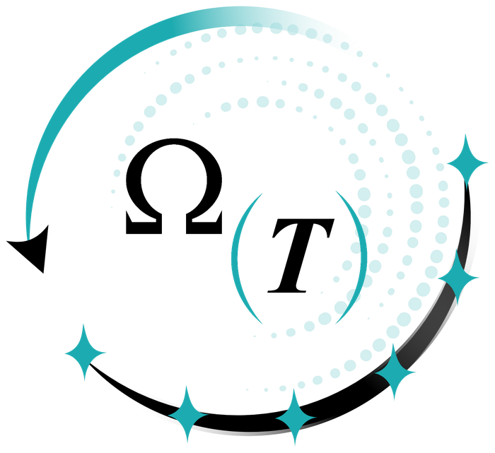
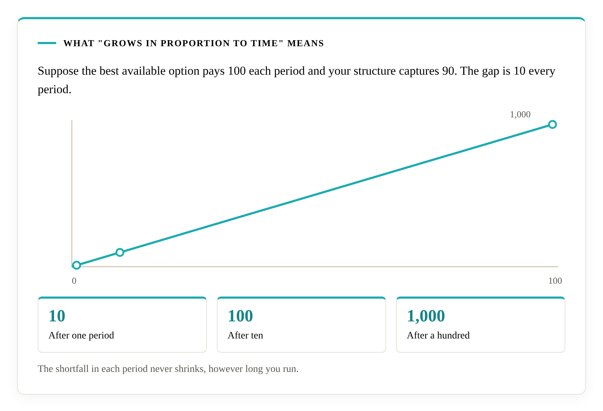
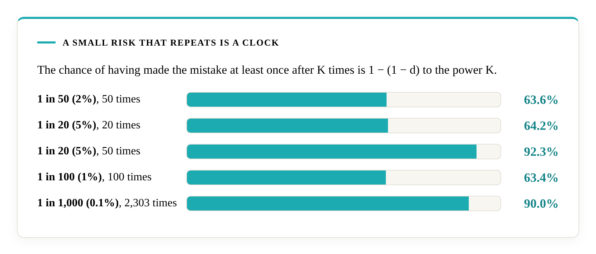

Objective Tracking
When two explanations of your results would each call for a different action, does your process find out which is true?
Literacity. Decisional assurance.
Every proposal you approve is a decision, and the plan inside it is a structure that commits you to a course. Mathematics has proved six capabilities that structure needs. Lean 4 checks the proof, and anyone can rebuild it. Literacity verifies whether your structure has them.
Literacity is a team whose work rests on one body of research, Ismail’s, from start to finish. Ismail, who proved the primitives, is the final arbiter of every verification.

sorry, custom axiom or opaque definitions as of 2026-10-24What it is
| Term | Meaning |
|---|---|
| Ismail’s Primitives | Six capabilities that a decision structure needs, proved necessary and checked in Lean 4. |
| Decisional Integrity | The property a decision structure has when, in a Class C environment, it possesses all six primitives. |
| Decisional Assurance | The act of verifying whether a structure has that property. Literacity offers it as a service. |
A structure can have the property before anyone verifies it. Verifying it is the service.
When two explanations of your results would each call for a different action, does your process find out which is true?
Does your process keep you away from the action that cannot be undone and offers nothing further?
Does it keep looking for something better than a comfortable plateau?
When the evidence has settled, does it commit?
Does it hold a hard limit fixed, whatever the reward on offer?
When the world changes, does it let go of what the old world taught?
Every business decision area is in Class C, because information is incomplete, commitments are often irreversible, options can be comfortable without being best, some limits cannot be traded and markets change. One situation is enough.
Evidence
On Eroding Trust in Decision Firms is a synthesis of 26 independence-rated reports published between August 2020 and August 2026. Fourteen cover eight major consulting and audit firms. Twelve cover the industry, academic assessments and counter-narratives. It was compiled on 2026-08-24 and rechecked on 2026-10-06, independently of any client, firm or interested party.
Six of the eight firms were implicated in a significant scandal in the period.
Advisory fees now exceed audit fees across the Big Four: US$77 billion against US$53 billion (Bloomberg Tax, 2022-08-17).
In a survey of 1,002 senior executives sponsored by IBM, 65% said traditional consulting no longer delivers real value and 13% rated it highly effective (HFS Research, 2025-11-11; the Dossier rates this source Low-Medium for independence).
A peer-reviewed study of KPMG in Germany found that after failures in its non-audit work, its audit clients suffered negative capital-market reactions and KPMG itself faced no significant consequences.
The Dossier classifies the failures it documents at roughly 65% structural decisions and 35% operational execution. It treats the operational failures as the visible symptoms and the structure as the cause. The split is the Dossier’s own classification. When the cause is structural, the question to ask is what the structure needs, and the next section answers it.
An engagement begins with a discovery call.
Mathematics
A decision structure faces up to six situations, P1 to P6, and each has a matching capability, X1 to X6. The theory applies to environments in Class C, which show at least one of the six.
| Situation | In plain terms | Primitive |
|---|---|---|
| P1 Reward ambiguity | More than one explanation of what is working fits the evidence, each calls for a different action, and only results over time separate them. | X1 Objective Tracking |
| P2 Absorbing trap | Some action, once taken, cannot be undone and offers nothing further, and the structure can reach it. | X2 Cross-Context Safety Transfer |
| P3 Local optimum | A comfortable plateau keeps the structure in place while a better region exists, and reaching it costs something first. | X3 Global Attractor Exploration |
| P4 Deterministic optimum | The evidence has settled and one option clearly beats the alternatives. | X4 Policy Simplification |
| P5 Constrained feasibility | Some moves are off the table whatever the upside, because breaching the limit costs more than any reward can offset. | X5 Feasibility Projection |
| P6 Nonstationarity | A relationship the structure relies on has changed. | X6 Feedback Adaptation |
Where the matching capability is missing, loss grows in proportion to time, whatever else the structure does well. The paper calls this linear regret. If the best available option pays 100 each period and a structure captures 90, the gap is 10 every period: 10 after one period, 100 after ten, 1,000 after a hundred.

A good year can hide the gap. A process that lacks a required capability can post steady, positive results for a long time while the gap grows underneath.
Proves, for each primitive, that a structure lacking it suffers linear regret.
Proves that none of the six can stand in for another, across all thirty ordered pairs, from one master theorem.
A machine-checked bridge towards sufficiency, built on hypotheses that sufficiency work fixes for each organisation.
Parts I and II hold without conditions.
Lean 4 checks every step. The proof runs to 12,667 lines in seven files, with zero sorry, zero custom axiom and zero opaque definitions as of 2026-10-24, and it rests on Mathlib’s axioms alone. Anyone can rebuild it from the Lean repository. The paper is licensed CC BY 4.0 and the Lean code MIT.
At a 5% chance each time, the chance of having made the irreversible mistake at least once is 64.2% after 20 times and 92.3% after 50.

The Trace
Every Literacity finding can be followed, one reference at a time, down to the axioms.
Every finding names the public criterion it rests on.
Each criterion says what a decision structure must show to possess one primitive, and names the Lean definitions it rests on.
The criteria rest on numbered results, and the paper’s appendix maps each result to a Lean identifier.
Each result is a named theorem, with a file and a line.
Lean’s kernel checks every step from Mathlib’s axioms alone.
The necessity theorems
| Primitive | Theorem | Location |
|---|---|---|
| X1 Objective Tracking | necessity_x1 | Phase3.lean, line 122 |
| X2 Cross-Context Safety Transfer | necessity_x2 | Phase3.lean, line 931 |
| X3 Global Attractor Exploration | necessity_x3 | Phase3.lean, line 1556 |
| X4 Policy Simplification | necessity_x4 | Phase3.lean, line 1831 |
| X5 Feasibility Projection | necessity_x5 | Phase3.lean, line 2046 |
| X6 Feedback Adaptation | necessity_x6 | Phase3.lean, line 2575 |
All thirty independence results follow from mutual_independence at Phase4.lean, line 1480.
Three commands anyone can run
From the root of the Lean repository.
Totals 12,667 lines across seven files as of 2026-10-24.
Prints nothing.
Prints one line, in Phase2.lean, which raises an instance-search time limit.
Services
Sufficiency engagements are planned from Q4 2027.
The first cohort of verifications will be published by Q2 2027, and the registry lists each as it is issued.
What the audit reads
The audit looks at how decisions are made, so it proceeds without access to what the decisions were about. The material is the organisation’s decision records: past decisions with their evidence, the framework in use, the decision process in effect, and the templates and procedures for new decisions. The sample is chosen by a rule fixed before the evidence is read and includes one case that succeeded, one that failed and one still in progress. Case materials stay private, and only the fact and date of a pass are public.
The verification statement
Ismail and Literacity verified that Company was evaluated on date and found to possess Ismail’s Primitives in its decision structure. Evaluated against criteria version x on a sample of y. Valid for twelve months from date.
An engagement begins with a discovery call.
For you
When the work is done, you hold a dated statement that your decision structure has the six capabilities mathematics has proved every sound structure needs, backed by a proof you can point anyone to.
Most decision frameworks in advisory are rules of practice. SWOT, MECE and stage gates are examples, and none of them comes with a machine-checked proof that a structure needs it.
Six capabilities, each proved necessary, with the proof checked by Lean 4 and open for anyone to rebuild.
If you advise others, all ten lines apply. If you run an organisation and want to show your board, lenders or partners how you decide, the first eight apply.
A verified firm can point clients and partners to the mathematics and invite them to check it.
The registry is empty today. The first cohort will be published by Q2 2027.
How it runs
Scope is agreed after this step.
The evidence is reviewed against the public criteria.
Each finding cites the public criterion it rests on, so the client can check it against the field.
Where the audit found gaps. The client chooses its own tools.
A pass means possession of all six primitives.
On a pass, a public statement records the verification, and the registry lists it.
A verdict applies at a date.
Lean verifies Ismail.
Ismail verifies the application.
The client verifies that those two say the same thing.
Scope is agreed for each engagement after the discovery call, because a small business and a large corporation differ in the processes in scope, the evidence available and the terms that apply.
About
Muhammed Ismail is a theoretical mathematician in South Africa. He proved that six structural capabilities are necessary for a decision-maker to avoid failure under uncertainty, checked the proof in Lean 4, and owns and directs Literacity, the service that applies it.
In September 2025 Ismail noticed that his own decisions followed a recurring six-step pattern, which he first treated as a personal heuristic. He asked whether the pattern could be proved. He then answered his own question by proving it in Lean 4.
The record: six papers on Zenodo under CC BY 4.0, three public repositories (IsmailsPrimitives, IsmailsGlossary and IsmailsProtocols) and the Lean proof.
The team
Literacity is a team whose work rests on one body of research, Ismail’s, from start to finish. The team carries out every audit. Ismail founded and leads Literacity, trains the team in the research and is the final arbiter of every verification. Literacity Pty Ltd, registration number 2016/135857/07, was founded in 2016 and is owned and directed by him.
The approving role rests on public artefacts, and Ismail’s own approval rests on the same ones. Another person can take the role by presenting artefacts of the same type and depth. As of 2026-10-22 no one else has presented that proof.
Three public accounts
They are kept separate so Literacity’s work can be checked against open material.
The Lean proof and paper are the research.
The field is held by its originator, separate from any commercial application.
Literacity is the commercial service and links to the field.
An engagement begins with a discovery call.
Questions
It is a guarantee about failure. A plan that lacks a primitive will fail. Possession of all six is where every sound decision starts, and your strategy is what you build on it. Sufficiency work is planned from Q4 2027.
In the proof, failure means linear regret: the gap between what a structure achieves and the best available grows in proportion to time, without limit.
Yes. Every business decision area is in Class C. One situation is enough, and the self-check lets you see each one in your own decisions.
A good consultant can read everything Literacity publishes. Assessing a real structure against the proofs takes a combination of disciplines that the field calls uncommon. Familiar methods supply part of the six, and none supplies all six on its own.
Literacity analyses how decisions are made, so an audit proceeds without needing what the decisions were about. Case materials stay private, and the registry lists only the fact and date of a pass.
Contact
An engagement begins with a discovery call. Pick a time that suits you and Literacity will meet you then.
Subject: Discovery call
Name:
Organisation:
Decision area I have in mind: